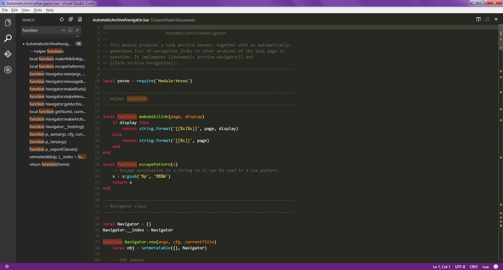

|
|
Zaawansowane Visual Studio Code | Notepad++ | Atom | Visual Studio Code |
| Visual Studio Code is a source code editor developed by Microsoft for Windows, Linux and macOS. It includes support for debugging, embedded Git control, syntax highlighting, intelligent code completion, snippets, and code refactoring. It is also customizable, so users can change the editor's theme, keyboard shortcuts, and preferences. It is free and open-source, although the official download is under a proprietary license. |
|
|
|  | ||
| Powrót do strony głównej | ||